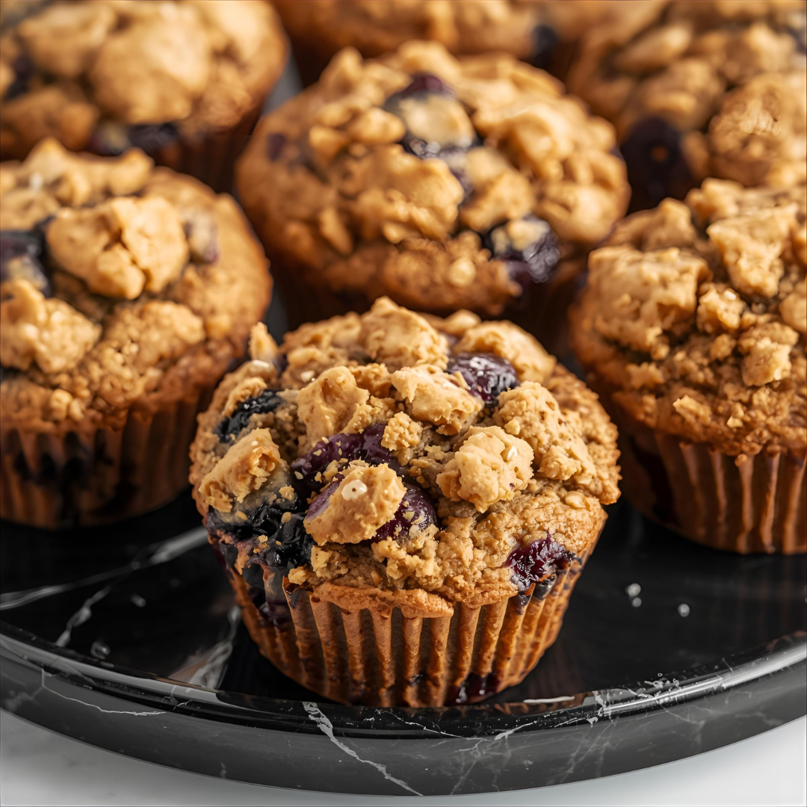

Home
Bluberry Protein Muffins

- Makes 10 muffins
- Preparation time: 10 minutes
- Ready in 40 minutes
Ingredients
- 250g unsweetened apple sauce
- 175g 0% fat Greek yoghurt
- 60g egg whites
- 66g (2 scoops) cinnamon or vanilla protein powder
- 240g oat flour
- 270g fresh blueberries
- 5g (1 tsp) vanilla extract
- 6 packets sweetener
- 6g baking powder
- 4g baking soda
Steps
- Preheat the oven to 163 degrees Celsius
- Combine all wet ingredients into a bowl and mix until evenly distributed
- In another bowl, combine all dry ingredients and mix. Then, combine the wet and dry ingredients in a bowl.
- Mix until you get a smooth consistency. Fold in blueberries.
- Spray a muffin tray with cooking spray, and pour the batter into the muffin trays. Be sure to leave aprox 1 cm of room for the muffins to rise in each tray.
- Bake for 15-20 minutes, or until a toothpick comes out clean.
- Let cool on a cooling rack and serve.